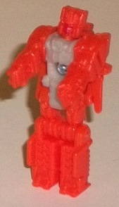
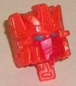
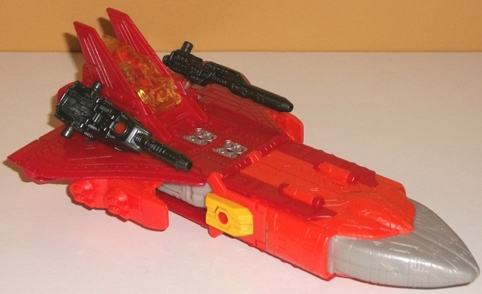
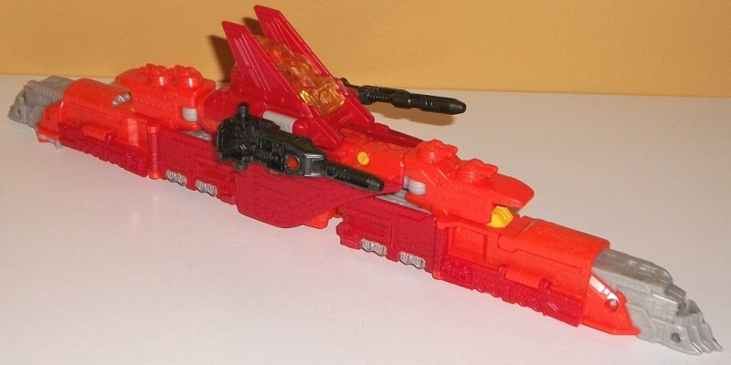
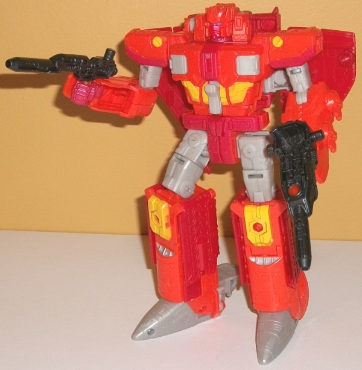

Allegiances
: Autobot
Size
: Voyager
Difficulty of Transformation to Shuttle
:
Easy
Difficulty of Transformation to Train
:
Medium
Color Scheme
: Moderately bright
orange, semi-metallic moderately dark red, and some light milky gray, transparent
yellow, metallic black, silver, yellow, and blue
Rating
: 7.6


The Titan Master for
Sentinel Prime is named Infinitus, and in Titan Master mode he... really
looks like a miniature version of Sentinel Prime's robot mode, with the
vehicle parts 'n such removed so that he fits in with the typical Titan
Master proportions. The Titan Master head is a miniature version of Sentinel's
head, the legs have similar details, etc. The orange is a bit bright, but
it's nullified a bit by the gray-- I'm not a fan of this particular shade
of gray (I wish it was a bit sparkly and semi-metallic). The head has a
bit of red paint on it, but the red is a bit too close to the orange to
the point where it doesn't stick out enough-- it's easy to look over. Like
all Titan Master figures, Infinitus can move back-and-forth at the hips
and knees (as one, each leg is bolted together), as well as limited ball
movement at the neck and shoulders. In head mode, the sculpt for Sentinel
Prime's head is very crisp, being a bit different from the usual Optimus
sculpt with more angular antennae and crests and multiple ridges on the
faceplate. The blue eyes REALLY pop against the orange, but although the
red faceplate is a nice touch-- again, it doesn't stick out enough from
the orange.



Like the other Titans
Returns voyagers, Sentinel Prime's first vehicle mode is a space shuttle,
though it's definitely a "futuristic" kind of space shuttle and not a realistic
kind. The proportions are very... flat for the nosecone, and with the cannons
on the sides it's a bit too obvious that this is basically just Sentinel's
robot mode laying down on its front with the feet locked together and a
couple of panels moved around. That said, with the exception of the turrets,
this mode is pretty kibble-free-- and even then, given the futuristic alt
mode it's debatable whether the turret bits are kibble from the robot arms
or not. The painted train wheels in the middle of the body are also obvious
details that don't fit, but that's a fairly minor complaint. I do like
how the wings splay out, though, as well as the tailfins and the tower-cockpit
for Infinitus to sit in in between said tailfins. There's a little flip-out
landing gear on the bottom, as well as two little flip-out "nubs" (they're
not really the shape or have the mold detailng for landing gear) that help
keep the toy level in the back. Sentinel also comes with two guns--- one
of them a Titan Master can ride in, while the other is a more "normal"
gun with pegs on it that allow Sentinel to hold it either-way up. The two
guns can also combine, if you desire. The mold detailing in this mode is
pretty good, with a fair amount of futuristic details through the front
area of the shuttle (especially the odd shape of the cockpit windows),
with the shuttle details on the wings being more what you'd expect. Sentinel
Prime's color scheme is pretty darned orange, with his main orange being
a somewhat bright shade of the color (though not to the point of being
"safety" orange), with a good amount of moderately dark red used as both
a contrasting and complementary color. That said, I wish the red was a
bit darker to provide a bit more contrast, and Sentinel looks a bit too
"light" particularly in his other two modes where the red isn't quite as
dominant. He also has a nice transparent yellow around the cockpit area,
and some yellow paint apps on the sides. For a neutral color, Sentinel
has a light milky gray-- which, yes, unfortunately is that very blah shade
of the color. Thankfully it's not that dominant in this mode, only really
coming into play on the nosecone. There's also a bit of silver, and some
nice metallic black on his guns, but this mode definitely needed some more
paint-- not even the cockpit windows could be painted, seriously?! The
wings are completely barren except for small Autobot symbols, and the tailfins
and cockpit are unpainted too.
Sentinel's second vehicle
mode is a "war train" mode, which is sort of an excuse for it not to look
completely like a train. This is basically Sentinel Prime's robot mode
split down the middle, with the wing backpack folded over the robot chest
to keep those robot bits out of view. This center section is easily the
weakest part of this mode, as... well, there's wings along the sides of
the train (with a visible gap in between one side of the train and the
wings). And wings along the top. And it's waaay taller in the center than
on the sides. That's just not a train, I don't care if you label it a "war"
train or not. I also don't like that both ends look identical-- the direction
of the wings is the only way you can tell the "front" of this train. I
wish the "rear" foot instead became a sort of boxcar to denote the back
end of the train. All this said, there are definitely some things I like
about this mode, such as the VERY intricate detailing on the train parts,
from the fold-down train wheels, how well-detailed the train front(s) are
with the sculpted wedges, all the little windows... I love that there are
panels made that fold down specifically just so that the train wheel details
are present, when Hasbro didn't really have to do that. (That said, only
the wheels closer to the center are painted silver; the other wheels are
sadly unpainted, and same with all the details on the train fronts.) It
should be noted, however, that these wheels are simply molded-in details;
there's three wide gray wheels along the bottom that help the train to
roll, but they have nothing to do with the wheel details on the side, here.
I also do like how the gun emplacements molded onto the arms are placed
right above the lowest section of the train-- now THAT I will accept for
a "war train", though again, I wish there was more paint applied to this
mode, and there's no paint on these turrets.
Sentinel's robot mode
is easily his strongest mode, with some solid proportions that look fairly
"Prime-like" with the gray bits that look kinda like windows on the chest,
as well as fairly broad shoulders and moderately thick appendages. There
is some kibble-- namely the shuttle wings on the back-- but they stay out
of the way of articulation for the most part, and look sort of like a cloak
anyway which fits his "imperialist Autobot" characterization. I do love
that the turrets are on his lower arms for some firepower even if he's
not wielding his guns, and the shuttle nosecone halves make for excellent
toes. When plugging in Infinitus (or any other Titan Master), pressing
on a little gray button on Sentinel's abs will cause two little "neck bits"
to pop up alongside the head, to make it look a little bigger given the
larger toy that the Titan Master is making a head for. Sentinel's coloration
is considerably more varied in this mode, with the light milky gray forming
the toes, upper legs, upper arms, and a few other minor bits, as well as
a good number of paint apps (finally), such as the yellow on the hsoulders,
abs, and knees, and the metallic red on the waist, chest, shoulders, fists,
and side of the legs. Again, I wish this red was a bit darker, but it still
looks good; Sentinel is just a bit of a bright 'bot. I DO wish that excellent
blue used for his eyes was used on a few other areas, though. For articulation,
Sentinel can move at the neck, shoulders (at three points), elbows, inwards
at the wrists, and at the hips (at three points), knees (at two points),
and slightly back-and-forth at the ankles. Thus, except for waist movement
(which is pretty much forbidden given his transformation anyways), he's
quite poseable, and well-balanced too to pull off many excellent poses.
Titans Return Sentinel
Prime is a decent addition to the line, as it's nice to get a non-
movieverse
version of the rogue Autobot character. His color scheme is a little too
bright (and not in a good way for me) in that I wish his red was a bit
darker or something, but it's still okay, and his robot mode proportions
are excellent. However, both of his vehicle modes are a mixed bag, with
his shuttle mode being too flat and his train mode having a huge section
in the middle that isn't very train-like. He also definitely needed some
more paint apps visible in his alt modes. Mildly recommended, more for
the new character and robot mode than the alt modes-- though I wish he
looked less obviously like an Astrotrain "pre-mold"...
Review by Beastbot